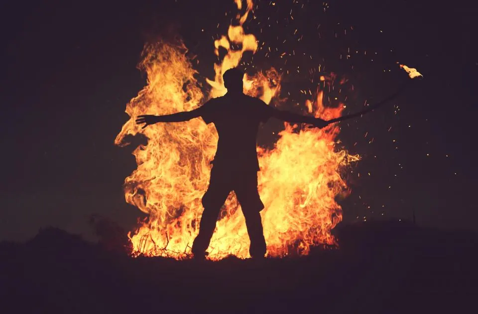
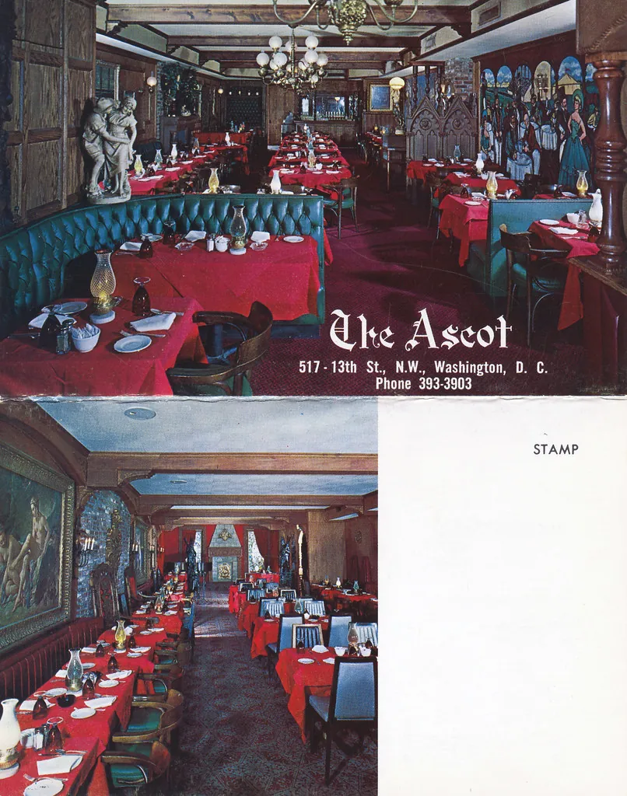
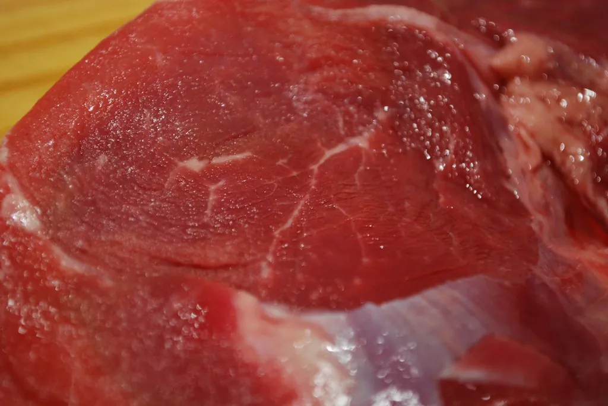
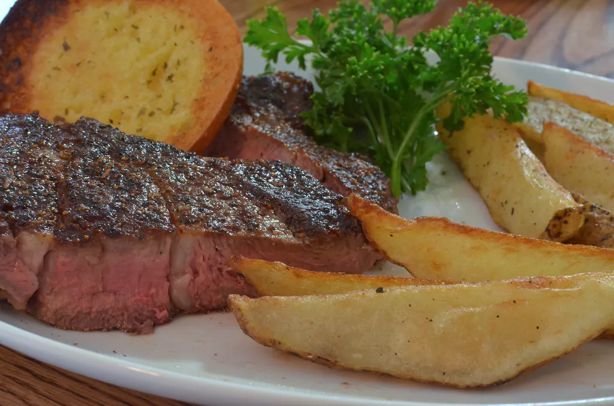
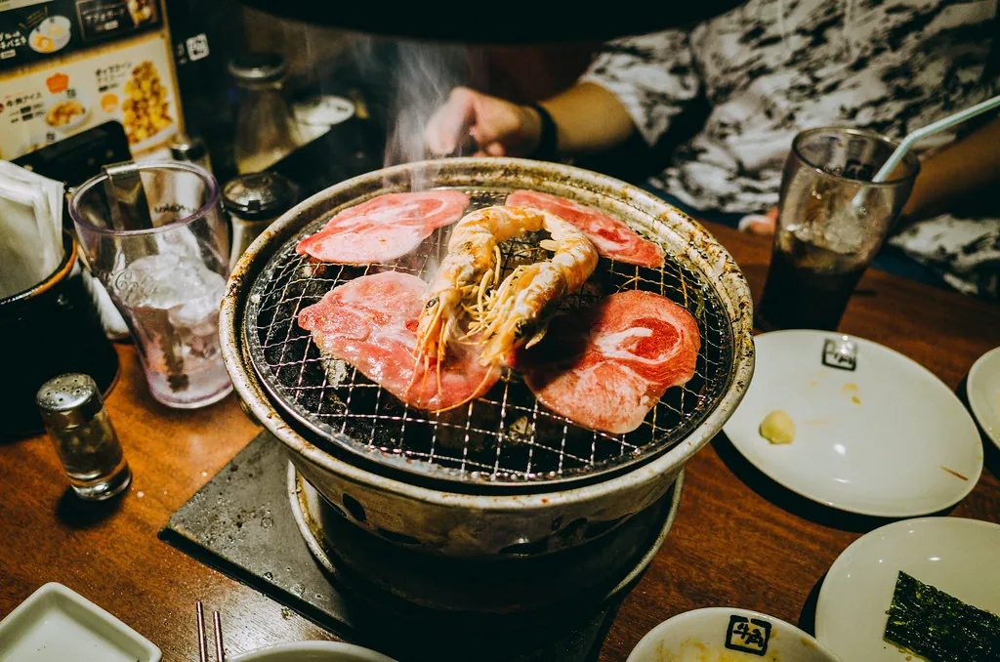
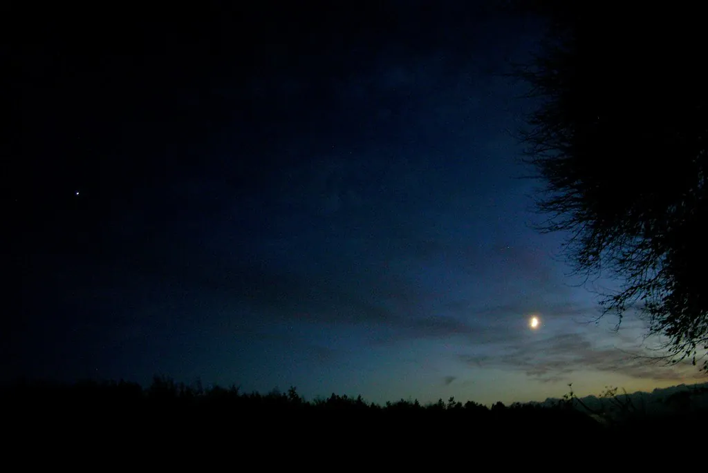
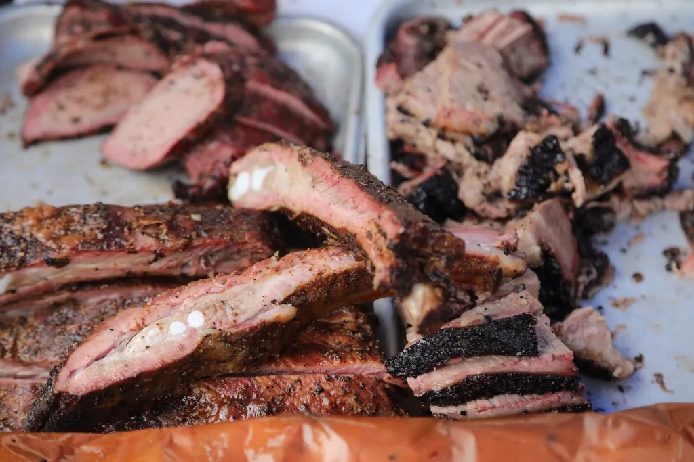
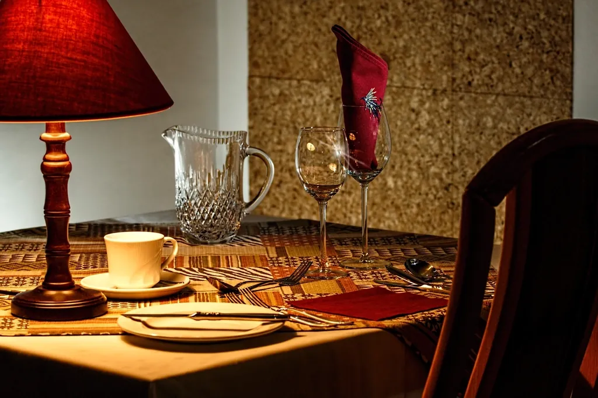

← Volver al inicio
Créditos
Las imágenes utilizadas en este sitio web provienen de Openverse y se usan bajo sus respectivas licencias Creative Commons. Se agradece el trabajo de cada autor.
| Imagen | Título | Autor | Licencia | Fuente |
|---|---|---|---|---|
 |
Dark Night
Portada del video hero
|
Tao Wen |
CC0 1.0 Ver licencia |
StockSnap |
 |
Pizza in Oven DSC00179
Sección Concepto / Historia
|
kurmanstaff |
CC BY 2.0 Ver licencia |
Flickr |
|
Cacti Choirmaster
Pilar — El Fuego
|
Tony Fischer Photography |
CC BY 2.0 Ver licencia |
Flickr | |
 |
DFC 1757 — Raw beef
Pilar — El Corte
|
PattayaPatrol |
CC BY-SA 4.0 Ver licencia |
Wikimedia Commons |
|
Smoke From the Pit
Pilar — El Tiempo
|
Matt Brock ☀ |
CC BY-NC-SA 2.0 Ver licencia |
Flickr | |
 |
A cooked beef steak closeup
Galería
|
Jakub Kapusnak |
CC0 1.0 Ver licencia |
rawpixel |
 |
Roasted Rib Eye 650g
Galería
|
avlxyz |
CC BY-SA 2.0 Ver licencia |
Flickr |
 |
Tokyo_5
Galería
|
hans-johnson |
CC BY-ND 2.0 Ver licencia |
Flickr |
 |
Dying Fire at Night
Galería
|
sjrankin |
CC BY-NC 2.0 Ver licencia |
Flickr |
 |
BBQ public domain image
Galería
|
usbotschaftberlin |
CC0 1.0 Ver licencia |
rawpixel |
 |
Spring-Echo — Restaurante
Galería
|
Jason M. C., Han |
CC BY-SA 4.0 Ver licencia |
Wikimedia Commons |